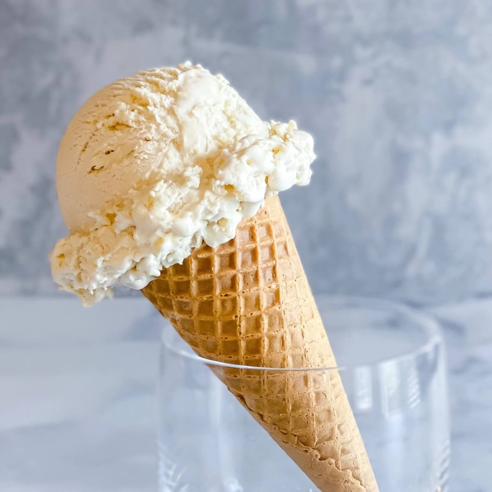

Ice Cream
According to Wikipedia, "ice cream is a frozen dessert typically made from milk or cream that has been flavoured with a sweetener, either sugar or an alternative, and a spice, such as cocoa or vanilla, or with fruit, such as strawberries or peaches. Food colouring is sometimes added in addition to stabilizers. The mixture is cooled below the freezing point of water and stirred to incorporate air spaces and prevent detectable ice crystals from forming. It can also be made by whisking a flavoured cream base and liquid nitrogen together. The result is a smooth, semi-solid foam that is solid at very low temperatures (below 2 °C or 35 °F). It becomes more malleable as its temperature increases. Ice cream may be served in dishes, eaten with a spoon, or licked from edible wafer ice cream cones held by the hands as finger food. Ice cream may be served with other desserts—such as cake or pie—or used as an ingredient in cold dishes—like ice cream floats, sundaes, milkshakes, and ice cream cakes—or in baked items such as Baked Alaska."
Ice cream is a dessert beloved by millions around the world. This site contains information about different types of ice cream, and the profitability of different flavors.
Ice Cream Flavors
Here are some of the most popular ice cream flavors in the world:
Chocolate Ice Cream

Chocolate ice cream is the world's most popular flavor. It is made with cocoa powder or melted chocolate. Originally made in 1693 in Italy, the flavor was popularized in the United States. Nowadays, chocolate ice cream is common in many shops around the world.
Vanilla Ice Cream
Vanilla ice cream is a classic flavor made with vanilla beans or vanilla extract. It is often used as a base for other flavors. First used by the Mexica in the 16th century, vanilla ice cream has become a staple in many countries around the world.
Strawberry Ice Cream

Strawberry ice cream is a fruity flavor made with real strawberries or strawberry puree. Strawberry ice cream dates back at least to 1813, when it was served at the inauguration of President James Madison. Today, strawberry ice cream is one of the most popular flavors in the world.
Mint Chocolate Chip Ice Cream

This ice cream is a refreshing flavor made with mint extract and chocolate chips. It is a popular choice for those who enjoy a nice, cool ice cream flavor. Chocolate chip mint ice cream has become a favorite among ice cream lovers ever since it was created in the 1970s.
Chocolate Chip Cookie Dough Ice Cream
A personal favorite of mine, chocolate chip cookie dough is a flavor made with cookie dough pieces and chocolate chips. The flavor was popularized by ice cream chain Ben & Jerry's in the 1980s, and has since become a staple in many ice cream shops around the world.
Our Sponsors
This webpage is sponsored by AJ. Click on this link for his computing and engineering course.